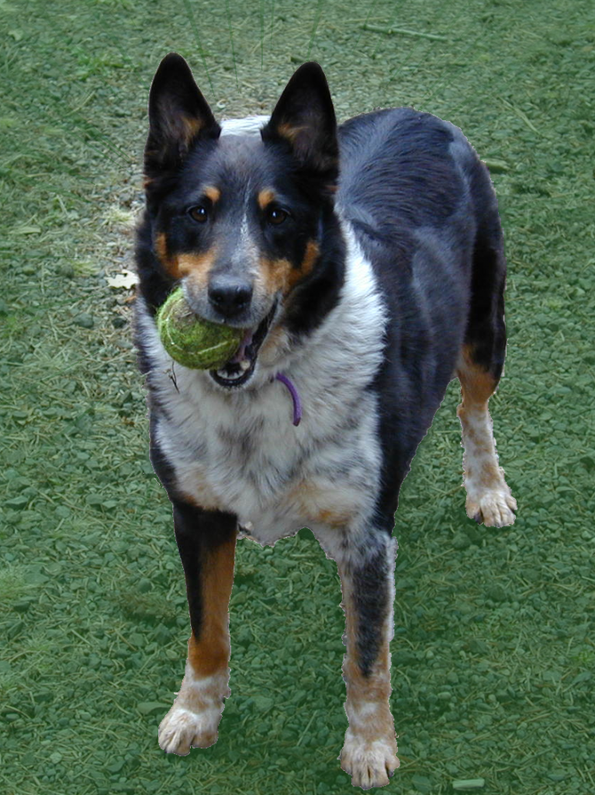

Tribute to a Dog
The best friend a man has in the world may turn against him and become
his enemy. His son or daughter that he has reared with loving care may
prove ungrateful. Those who are nearest and dearest to us, those whom we
trust with our happiness and our good name may become traitors to their
faith. The money that a man has, he may lose. It flies away from him,
perhaps when he needs it most. A man's reputation may be sacrificed in a
moment of ill-considered action. The people who are prone to fall on
their knees to do us honor when success is with us, may be the first
tothrow the stone of malice when failure settles its cloud upon our
heads.
The one absolutely unselfish friend that man can have in this selfish
world, the one that never deserts him, the one that never proves
ungrateful or treacherous, is his dog. A man's dog stands by him in
prosperity and in poverty, in health and in sickness. He will sleep on
the cold ground, where the wintry winds blow and the snow drives
fiercely, if only he may be near his master's side. He will kiss the
hand that has no food to offer. He will lick the wounds and sores that
come in encounters with the roughness of the world. He guards the sleep
of his pauper master as if he were a prince. When all other friends
desert, he remains. When riches take wings, and reputation falls to
pieces, he is as constant in his love as the sun in its journey through
the heavens.
If fortune drives the master forth, an outcast in the world, friendless
and homeless, the faithful dog asks no higher privilege than that of
accompanying him, to guard him against danger, to fight against his
enemies. And when the last scene of all comes, and death takes his
master in its embrace and his body is laid away in the cold ground, no
matter if all other friends pursue their way, there by the graveside
will the noble dog be found, his head between his paws, his eyes sad,
but open in alert watchfulness, faithful and true even in death.
George Graham Vest, 1870


{kind=link}